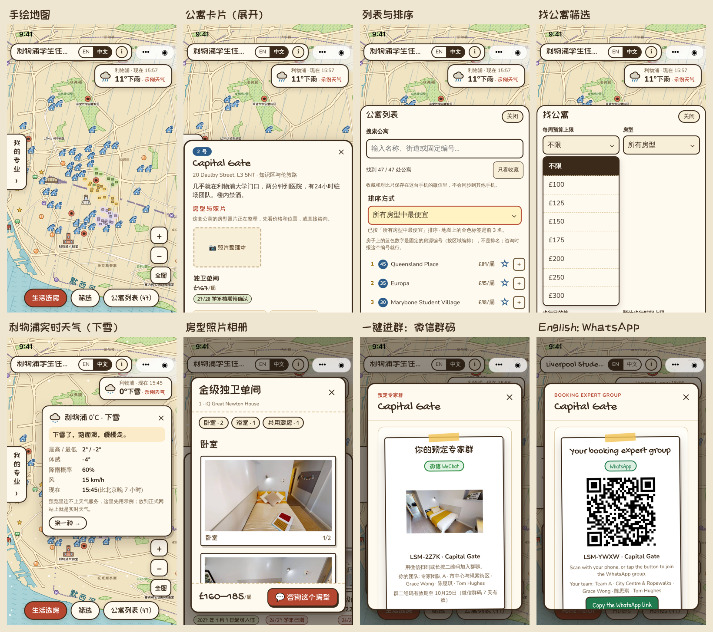
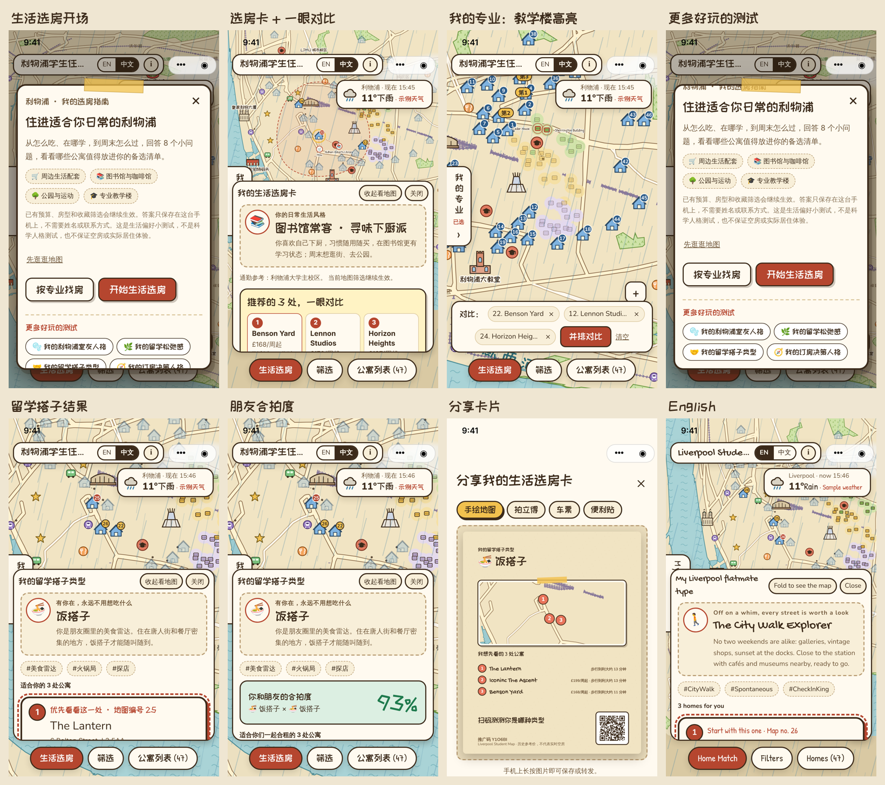

利物浦学生住宿地图 · 微信小程序测试说明
这个包用来测试微信小程序（中 / 英）。小程序要连一台服务器（公寓数据以外的东西都从服务器来：手写字体、房型照片、天气、一键进群、专家后台），包里已经带好，在一台电脑上运行就行。
现在还是测试版：没有正式 AppID、没有备案域名，所以订阅消息提醒和分享卡片上的小程序码暂时用不了（会自动退回普通二维码），其余功能都可以测。
包里有什么
| 文件夹 / 文件 | 是什么 |
|---|---|
miniprogram/ |
小程序源码，用微信开发者工具导入这一层 |
web-original/consult-server/ |
服务器（Node.js，无需安装依赖） |
web-live/ |
网页版，服务器顺便提供手写字体、房型照片和专家后台 |
start-demo.cmd / start-demo.sh |
一键启动服务器（Windows 双击 .cmd；Mac 在终端运行 sh start-demo.sh） |
docs/screenshots/ |
小程序截图，可以对照（本页最下面） |
一、准备
- 安装 Node.js 18 或更新版本：https://nodejs.org（选 LTS）。
- 安装 微信开发者工具（稳定版）：https://developers.weixin.qq.com/miniprogram/dev/devtools/download.html
- 电脑和测试手机连同一个 Wi-Fi（只用模拟器测可以忽略）。
二、启动服务器
双击 start-demo.cmd（Mac：终端里进入解压目录，运行 sh start-demo.sh）。看到下面两行就成功了，窗口保持打开：
Student website: http://localhost:8765/
Booking expert console: http://localhost:8765/adviser.html (password: 123456)
第一次运行，Windows / Mac 可能弹出防火墙提示，请选择允许（不然手机连不上）。
三、在开发者工具里打开（模拟器）
- 打开微信开发者工具 → 「导入」→ 选择
miniprogram文件夹。 - AppID 选「测试号」或保持游客模式（
touristappid）都可以。 - 右上角「详情 → 本地设置」：勾选 不校验合法域名、web-view（业务域名）、TLS 版本以及 HTTPS 证书（项目里已默认关闭校验，确认一下即可）。
- 点「编译」。左边模拟器里出现手绘地图和「生活选房」开场页就对了。
模拟器上方可以切换机型（iPhone、安卓、iPad），请多切几种看看。
四、真机测试（手机）
游客模式只能用模拟器。要在手机上测，需要一个小程序 AppID（总部注册的正式小程序，或者在 https://mp.weixin.qq.com 申请一个测试用的），并把测试同事的微信号加为该小程序的「开发者」或「体验成员」。
- 把小程序的服务器地址改成这台电脑的局域网 IP，并填上 AppID（在解压目录里运行）：
node miniprogram/scripts/set-server.cjs --appid 你的AppID
它会自动找到本机 IP（比如 http://192.168.1.20:8765）。找错了可以手动写：node miniprogram/scripts/set-server.cjs http://192.168.1.20:8765。
2. 开发者工具里点「编译」，再点「预览」，用手机微信扫码。
3. 手机上打开后，点右上角「···」→「开发调试」→ 打开调试，再重新进入（打开调试后才不校验域名，才能连上电脑上的服务器）。
4. 手机要和电脑在同一个 Wi-Fi。连不上时：先用手机浏览器打开 http://电脑IP:8765/，能看到网页版说明网络通了。
测完想改回模拟器用：node miniprogram/scripts/set-server.cjs --local。
五、专家后台（测「一键进群」要用）
电脑浏览器打开 http://localhost:8765/adviser.html，密码 123456。
学生在小程序里点「立即进群」后，专家后台会出现一条新请求（带 LSM-XXXX 咨询编号）。专家上传一张微信群二维码图片（任意二维码截图都行）或者填 WhatsApp 群链接，点发送，小程序里几秒内就会显示群码。
测群码过期（清单第 14 项）：微信群二维码默认 7 天有效。测试时先关掉服务器窗口，用约 4 分钟的有效期重新启动：
- Windows：在解压目录打开「命令提示符」，运行
set WECHAT_QR_DAYS=0.003，再运行start-demo.cmd - Mac：
WECHAT_QR_DAYS=0.003 sh start-demo.sh
六、测试清单
请按顺序走一遍，在「结果」一栏记下 ✅ 通过 / ❌ 有问题（有问题的按第十节的格式反馈）。中文、英文各测一遍（顶部 EN / 中文 切换）。
| # | 功能 | 怎么测 | 期望 | 结果 |
|---|---|---|---|---|
| 1 | 手绘地图 | 单指拖动、双指缩放、点 +/−/全图 | 流畅不卡；放大后图标和文字不会无限变大；重叠的地名自动隐藏 | |
| 2 | 公寓卡片 | 点地图上的房子 | 弹出卡片：编号、名称、价格、步行时间；「展开」看详情 | |
| 3 | 房型照片 | 卡片展开 → 房型与照片 | 照片能打开，相册按卧室 / 浴室 / 厨房分组 | |
| 4 | 公寓列表 | 底部「公寓列表」 | 搜索、只看收藏、排序都有效；排序后地图上出现金色「第1/2/3」标签 | |
| 5 | 筛选 | 底部「筛选」 | 预算、房型、步行目的地、步行时间生效，地图上只剩符合的公寓；图层开关有效 | |
| 6 | 我的专业 | 左侧「我的专业」标签 → 选一个专业 | 相关教学楼加红圈并显示楼名，公寓按到教学楼的步行时间排序；「在地图上查看」能对准教学楼 | |
| 7 | 生活选房 | 打开小程序就会出现；或底部「生活选房」 | 8 道题，点选项自动下一题；最后出现选房卡：生活风格、推荐 3 处、一眼对比；地图上标出推荐和 10 分钟圈 | |
| 8 | 公寓对比 | 选房卡「并排对比」，或卡片 / 列表里的「+」 | 对比表能左右滑动，「最佳」标签正确；底部对比栏可删除、清空 | |
| 9 | 人格测试 | 生活选房开场页底部「更多好玩的测试」 | 4 套测试都能做完，结果卡上有类型、标签、推荐 3 处公寓 | |
| 10 | 合拍度 | 「留学搭子」结果卡 →「邀请朋友测合拍度」→ 发给另一个微信号 | 朋友点开直接进入测试，看到「你的朋友是「…」」，做完显示合拍度百分比 | |
| 11 | 分享卡片 | 选房卡或测试结果卡 →「生成分享卡片」 | 4 种样式都能生成；「保存图片」存到相册；「分享」能发给朋友；长按图片也能保存 | |
| 12 | 一键进群（中文） | 卡片或选房卡上「咨询这处公寓」→ 回答小问题 → 立即进群 | 出现咨询编号，等专家发码；专家后台发微信群码后小程序显示群码，长按能识别进群 | |
| 13 | 一键进群（英文） | 切到 EN 再做一遍 | 显示 WhatsApp 群链接和二维码，「复制链接」可用 | |
| 14 | 群码过期 / 申请新码 | 用「短有效期」启动服务器（见下），专家发微信群码，等约 4 分钟 | 小程序提示过期，能「申请新的群二维码」，专家后台收到新请求 | |
| 15 | 右下角气泡 | 进群请求发出后关掉弹窗 | 右下角有气泡提醒，点开回到进群页面 | |
| 16 | 天气 | 地图右上角天气卡 | 显示利物浦当前天气；地图上有雨 / 雪 / 雾效果，晚上地图变暗（服务器连不上外网时显示「示例天气」，属正常） | |
| 17 | 转发公寓 | 卡片上「分享这处公寓」或右上角「···」转发 | 朋友点开直接定位到这处公寓 | |
| 18 | 机型 | iPhone、安卓（尤其中低端机）、折叠屏、iPad | 布局不错位，底部按钮不被挡，标题栏不压住右上角胶囊按钮 |
七、请特别帮忙确认的几点
这几项在模拟器里看不准，必须用真机：
- 地图上和分享卡片上的手写字体能不能正常显示（不正常时会变成系统字体，功能不受影响）。
- 微信群二维码长按识别能不能直接进群。
- 分享卡片「保存图片」（第一次会请求相册权限）和「分享」是否正常。
- 中低端安卓机上拖动、缩放地图是否流畅。
八、现在不能用 / 属正常的情况
- 订阅消息提醒（专家发群码后微信通知学生）：需要正式 AppID 和订阅消息模板，测试版没有。
- 分享卡片上的小程序码：需要服务器配置 AppID / AppSecret；现在是普通二维码，扫了打开的是网页版。
- 价格和评价是 2026 年 10 月 17 日的历史记录，不代表实时空房。
- 测试数据（咨询请求、群码）保存在运行服务器的电脑上：
web-original/consult-server/data/。
九、常见问题
| 看到的提示 | 原因和处理 |
|---|---|
GET http://localhost:8765/api/weather net::ERR_CONNECTION_REFUSED，下面还有一行「连不上服务器…」 |
小程序连不上服务器。先确认 start-demo 的窗口开着、里面有 Student website: http://localhost:8765/；电脑浏览器打开 http://localhost:8765/ 能看到网页版就说明服务器正常。真机预览时 localhost 指的是手机自己，要先运行 node miniprogram/scripts/set-server.cjs 换成电脑的局域网 IP 再预览。连不上时天气显示「示例天气」，进群等功能用不了 |
this.options is not a function |
2026-10-22 第一版测试包的问题，已修复。请换用新的测试包 |
服务器窗口一闪就关了 / node: command not found |
没装 Node.js，或版本太旧（需要 18 以上）。装好后重新打开终端 / 命令提示符再运行 |
Error: listen EADDRINUSE :::8765 |
8765 端口被占用，通常是服务器已经开了一个。关掉旧窗口，或者用别的端口：PORT=8766 sh start-demo.sh（Windows：set PORT=8766 再运行 start-demo.cmd），然后 node miniprogram/scripts/set-server.cjs http://localhost:8766 |
| 字体是系统字体，不是手写体 | 字体从服务器下载，服务器没连上或还在下载。连上服务器后重新编译 |
十、反馈格式
每个问题请写：
编号：（测试清单里的 #，或「其他」）
手机型号 / 系统版本 / 微信版本：
中文还是英文：
操作步骤：
看到的结果：
期望的结果：
截图或录屏：
开发者工具右上角「详情 → 基本信息」里的基础库版本也请一并告诉我们。
截图
浏览器里模拟的效果，供对照；以开发者工具和真机为准。

